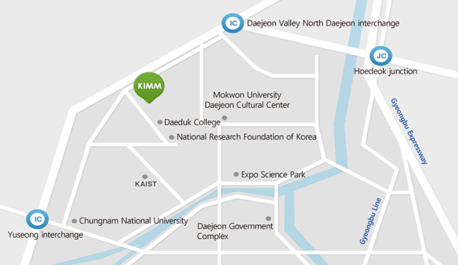

News |
About |
Lecture |
Services |
Equipment |
Contact
E-mail & Phone
Email rac@kimm.re.kr
Tel +82-42-868-7009
FAX +82-42-868-7082
Address
Building No. 9, 156 Gajeongbuk-Ro Yuseong-Gu Daejeon Korea, 34103(Postal code)
Map in Google

Getting to Daejeon from Incheon aiprpot
Daejeon is 2.5 hours from Incheon International Airport by car.There is frequent limousine service from the airport.The ticket office is located at Exits 4 and 9 on 1st floor, Passenger Terminal (Arrival Area).The limousine stops at several places in Daejeon.Make sure you get off at either “Daedeok Culture Center, Doryong-dong (도룡동 과학문화센터)“ or “Government Complex Daejeon (정부대전청사)". It takes 10-15 minuites by Taxi.
Getting to Daejeon from other regions in Korea
Take a train to Daejeon Station (12km from KIMM) or a bus to Daejeon Terminal Complex (12km from KIMM), Yuseong Bus Terminal (6km from KIMM), or Government Complex Daejeon Terminal (6km from KIMM).
Once You Arrive in Daejeon…
It is best to take a taxi to KIMM. Find a taxi stand or wave at a taxi coming by. Taxis in Korea are identified as vacant with the red light at the front or the top. Get onboard and give the address to the driver: 한국기계연구원, 유성구 가정북로 156